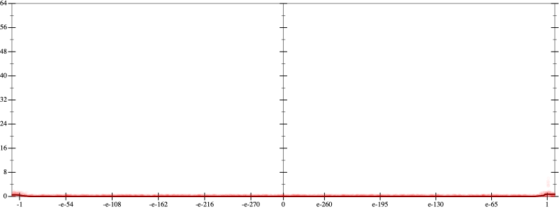
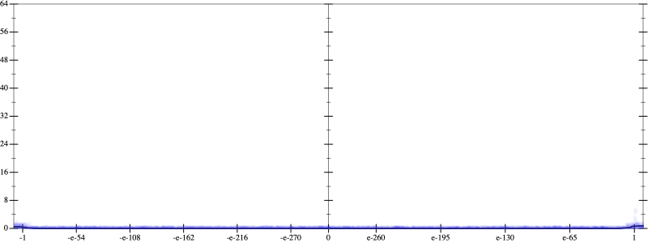
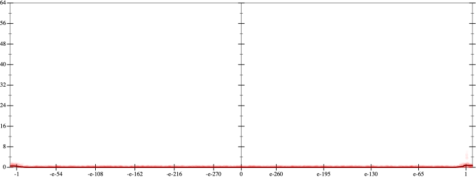
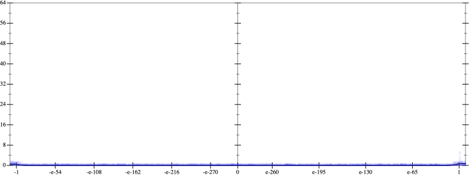

Initial program 0.0
\[\left(\left(\left(1.0 + -4.0 \cdot x\right) + 3.0 \cdot \left(x \cdot x\right)\right) + -0.666667 \cdot \left(\left(x \cdot x\right) \cdot x\right)\right) + 0.041667 \cdot \left(\left(\left(x \cdot x\right) \cdot x\right) \cdot x\right)\]
Applied simplify0.0
\[\leadsto \color{blue}{{x}^{3} \cdot \left(0.041667 \cdot x + -0.666667\right) + \left(\left(x \cdot 3.0\right) \cdot x + \left(x \cdot -4.0 + 1.0\right)\right)}\]
- Using strategy
rm Applied add-cbrt-cube0.0
\[\leadsto {x}^{3} \cdot \color{blue}{\sqrt[3]{\left(\left(0.041667 \cdot x + -0.666667\right) \cdot \left(0.041667 \cdot x + -0.666667\right)\right) \cdot \left(0.041667 \cdot x + -0.666667\right)}} + \left(\left(x \cdot 3.0\right) \cdot x + \left(x \cdot -4.0 + 1.0\right)\right)\]
Applied add-cbrt-cube0.0
\[\leadsto \color{blue}{\sqrt[3]{\left({x}^{3} \cdot {x}^{3}\right) \cdot {x}^{3}}} \cdot \sqrt[3]{\left(\left(0.041667 \cdot x + -0.666667\right) \cdot \left(0.041667 \cdot x + -0.666667\right)\right) \cdot \left(0.041667 \cdot x + -0.666667\right)} + \left(\left(x \cdot 3.0\right) \cdot x + \left(x \cdot -4.0 + 1.0\right)\right)\]
Applied cbrt-unprod0.0
\[\leadsto \color{blue}{\sqrt[3]{\left(\left({x}^{3} \cdot {x}^{3}\right) \cdot {x}^{3}\right) \cdot \left(\left(\left(0.041667 \cdot x + -0.666667\right) \cdot \left(0.041667 \cdot x + -0.666667\right)\right) \cdot \left(0.041667 \cdot x + -0.666667\right)\right)}} + \left(\left(x \cdot 3.0\right) \cdot x + \left(x \cdot -4.0 + 1.0\right)\right)\]
Applied simplify0.0
\[\leadsto \sqrt[3]{\color{blue}{\left(\left(-0.666667 + 0.041667 \cdot x\right) \cdot {\left({x}^{3}\right)}^{3}\right) \cdot \left(\left(-0.666667 + 0.041667 \cdot x\right) \cdot \left(-0.666667 + 0.041667 \cdot x\right)\right)}} + \left(\left(x \cdot 3.0\right) \cdot x + \left(x \cdot -4.0 + 1.0\right)\right)\]
 
